O MySQL é um dos SGBDs mais conhecidos do mundo. Muito famoso por ser leve, opensource e principalmente por ser um dos softwares do conjunto LAMP (Linux + Apache + MySQL + PHP).
Por ser um dos mais utilizados em produção, principalmente para sites, e pequenos sistemas, o MySQL também é um dos principais SGBDs para se aprender sobre banco de dados. Por isso, neste post eu vou mostrar um passo-a-passo de como instalar o MySQL no Windows.
>> O que é um SGBD?
Vamos lá?
Primeiramente, acesse a página de download do instalador do MySQL.
Nesta página você tem várias opções do MySQL para instalação, deste somente o servidor de banco de dados do Mysql, até conectores e ferramentas de trabalho.
Importante! Observe que tem a versão Enterprise e Community na página de download. Nós escolhemos a Community, pois é a versão gratuita. =P
Como vamos instalar o SGBD do MySQL e também algumas ferramentas opcionalmente. Vamos baixar o instalador global do Mysql, ou seja, o MySQL Installer
Você pode escolher entre o baixar só o instalador e ele se encarregará de baixar o resto na hora da instalação, ou você pode baixar o instalador que já traz todas as dependência.
Evidentemente o primeiro você pode usar em um lugar que tenha acesso à internet, pois ele vai baixar só o que você precisa. E o segundo você baixa se quiser instalar o MySQL em algum lugar que não tenha acesso à internet.
A diferença de tamanho é bem grande. Eu baixei o só o instalador.
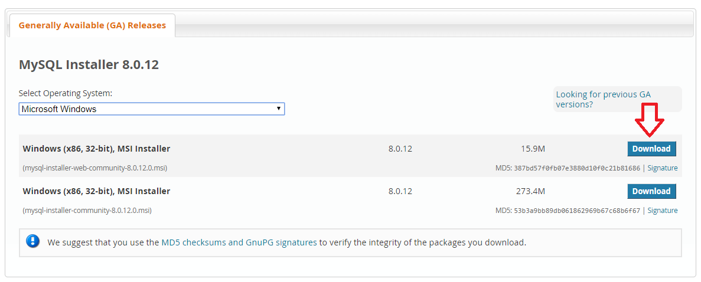A página seguinte pede login no site para fazer download. Mas tem um link para baixar sem fazer login. Você escolhe.
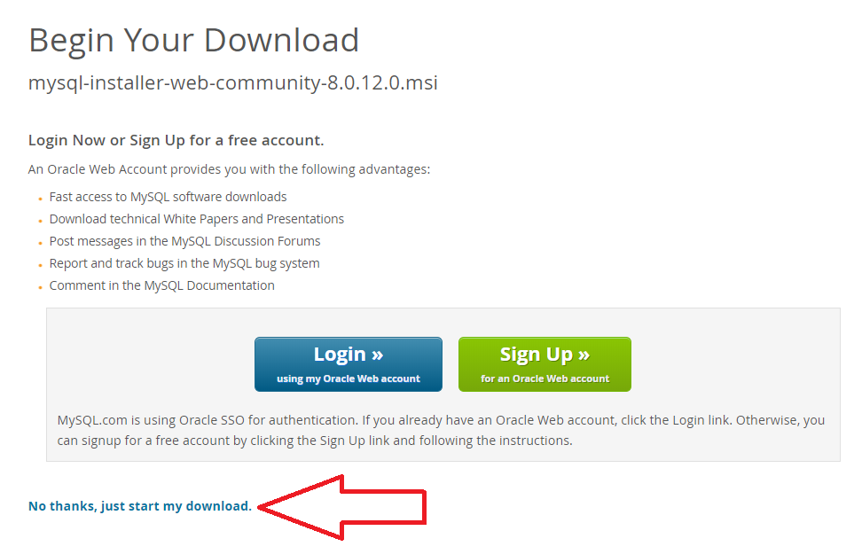Após baixar o instalador do MySQL, execute-o. Ele te pedirá acesso de administrador.
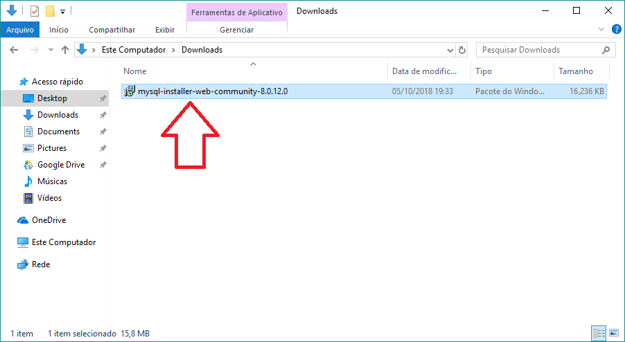Pode ser que o instalador identifique uma atualização e peça para ser atualizado, você pode escolher...
Eu preferi atualizar o instalador do MySQL. Neste caso ele vai baixar a atualização e em seguida iniciar o processo de instalação.
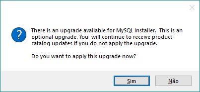A primeira tela do instalador do MySQL pede para aceitar os termos de licença. Se concordar aceite (marcando o checkbox I accept the license terms) e clique em Next.
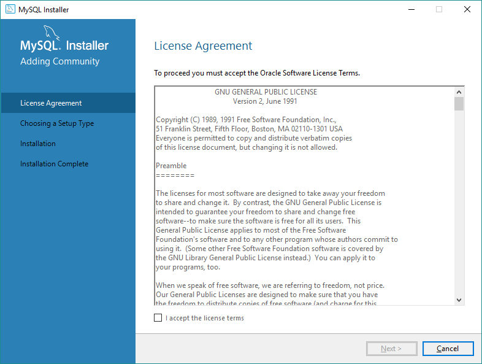Em seguida o instalador nos oferece 5 opções de instalação:
Eu sempre escolho personalizado pois nunca preciso de todos os conectores nem todas as ferramentas. E se precisar também, basta executar o instalador de novo e instalar o componente que eu precisar.
Escolha o que preferir e clique em Next >.
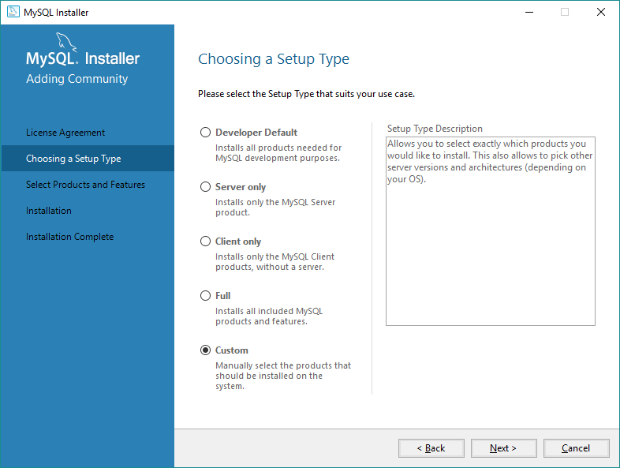Se você, assim como eu, escolheu a opção de personalizar a instalação, você poderá escolher o que quer instalar.
Selecione o que quer instalar e clique na setinha para direita. Se quiser remover algum componente da instalação, selecione-o e clique na setinha para esquerda.
Escolha o que quer que seja instalado (o que ficará na lista da direita) e clique em Next >.
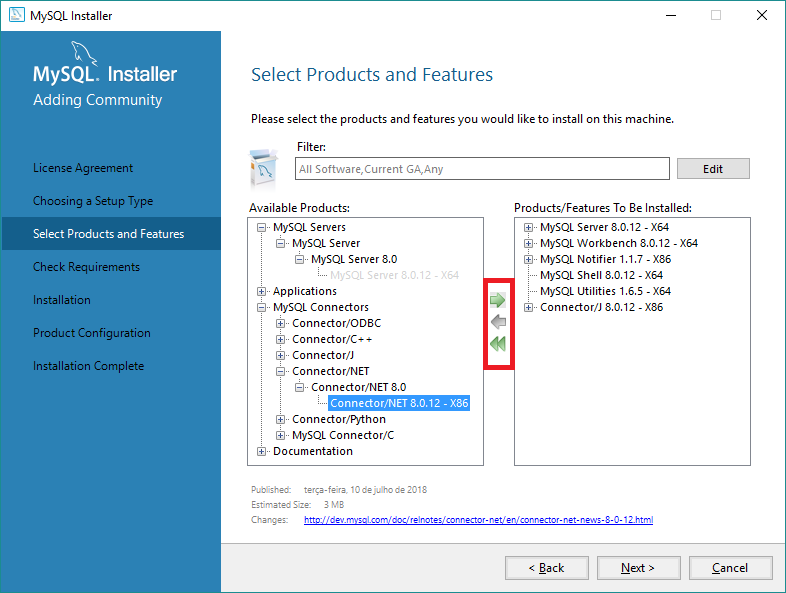Na sequência o instalador deve verificar se falta alguma dependência para algum dos componentes selecionados para instalação.
No meu caso, o instalador identificou que eu não tinha o Visual C++ 2013 instalado.
Basta clicar em Execute que o instalador do Mysql baixa o instalador desta dependência e instala.
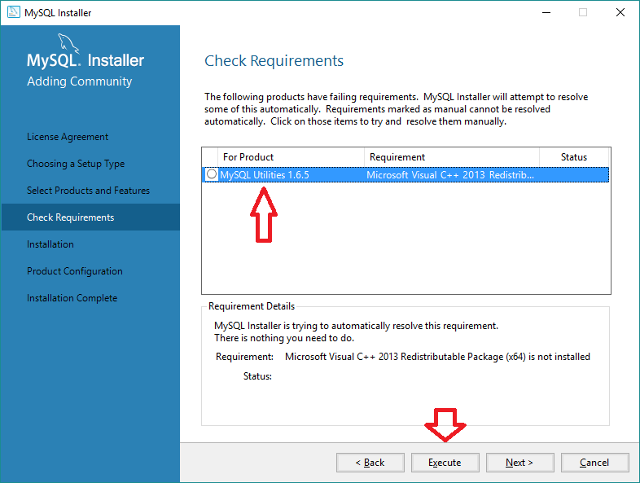No meu caso o instalador do Visual C++ 2013 foi baixado e executado automaticamente. Bastou aceitar os termos e clicar em Install.
Após finalizar a instalação do Visual C++ 2013, o instalador do MySQL identifica que as dependências já estão resolvidas.
Se tiver mais de uma dependência para ser instalada no seu computador o instalador do MySQL não vai continuar enquanto não atender os requisitos.
Quando as dependências estiverem devidamente instaladas, clique em Next >.
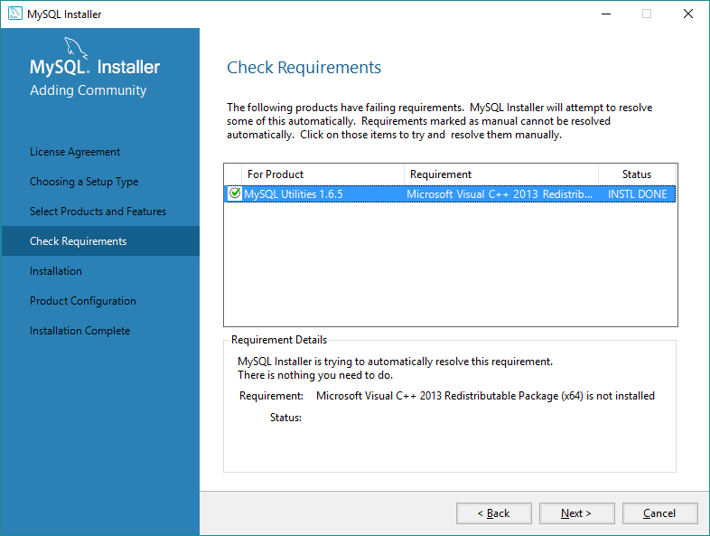Por fim, o instalador apresenta o que será baixado (se você escolheu o instalador mais leve que baixa o que precisa na hora da instalação) e instalado no seu computador. Se estiver tudo certo, clique em Execute.
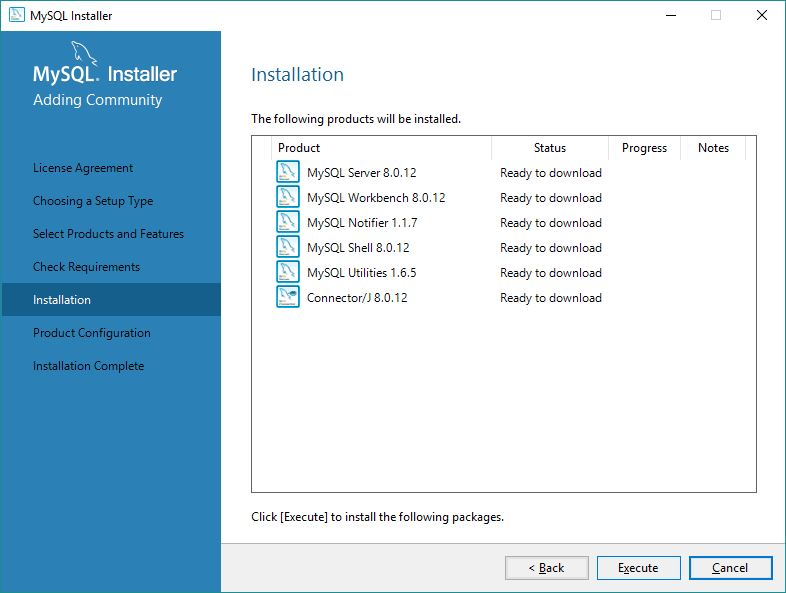Agora o instalador vai baixar tudo que precisa (se precisar)...
E instalar os componentes que você escolheu, um por um...

Após todos os componentes estiverem instalados, clique em Next >.
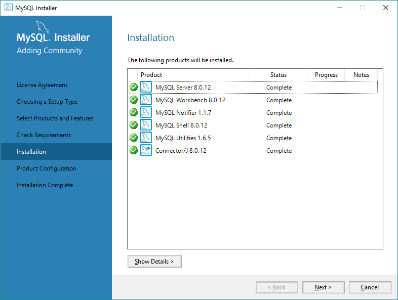Se você escolheu instalar algum componente que precisa de configuração como servidor SGBD MySQL, o instalador solicita que as configurações básicas sejam configuradas.
No meu caso era só o servidor MySQL que precisava de configuração. Clique em Next >.
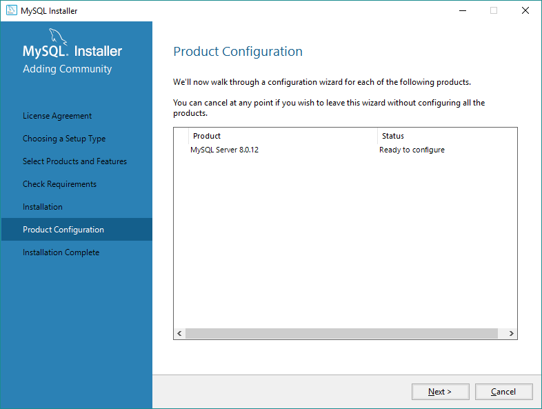Para configurar o servidor do MySQL, o instalador oferece duas opções: Standalone ou Cluster.
Se você está configurando um servidor para desenvolvimento e não precisa trabalhar com "Cluster", escolha a primeira opção.
Após escolher a forma de replicação (Standalone ou Cluster) clique em Next >.
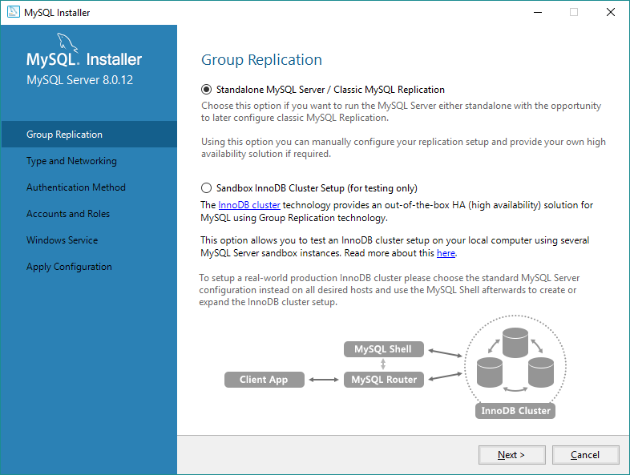Agora o instalador oferece algumas opções de configuração de rede e outras configurações. Se estiver instalando um servidor no seu computador para desenvolvimento, simplesmente aceite (ou troque a porta padrão do MySQL se for necessário, por causa de conflito) clicando em Next >.
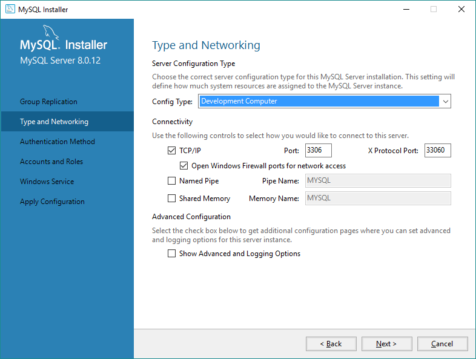Na sequência, chega o momento de configurar a forma de acesso do usuário principal do SGBD MySQL.
Você pode escolher se quer um método de autenticação com senha encriptada (recomendado) ou o método antigo de autenticação.
Eu prefiro o mais seguro! =P
E se você for usar MySQL com versão 8.0 ou superior você precisará escolher esta opção.
Clique em Next após se decidir entre as duas opções.
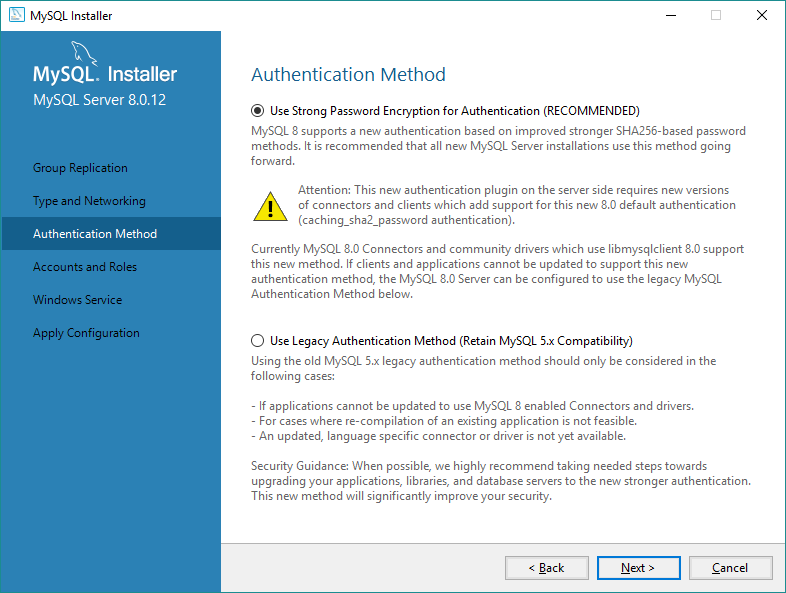A tela seguinte pede para definirmos uma senha para o usuário root, ou seja, o usuário administrador.
A sua senha pode ser considerada fraca, média ou forte ... É bom usar uma senha complicada, mas você precisa lembrar dela! rs
Independente se você criar uma senha forte ou fraca, você poderá continuar com a instalação do MySQL. Mas é necessário que você digite a mesma senha, exatamente igual, nos dois campos apresentados. Clique em Next >ong> para continuar.
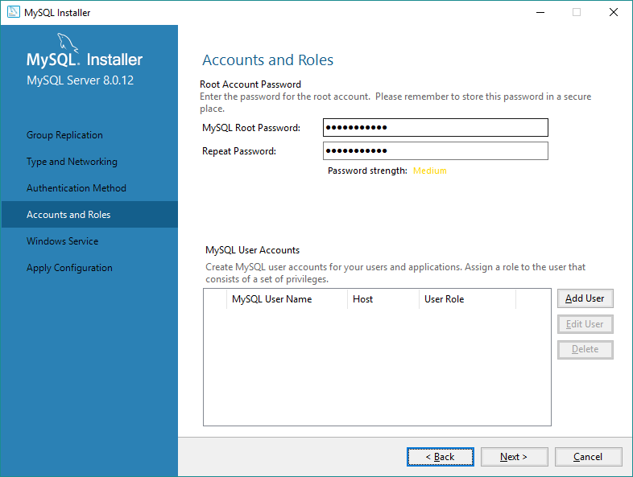Seguindo o processo de instalação, nós podemos configurar se queremos que o servidor do MySQL seja gerenciado como um processo do Windows, se deve ser iniciado quando o sistema iniciar e sob qual usuário o processo do servidor do MySQL deve ser executado.
Eu prefiro que o servidor do MySQL seja executado como um serviço do Windows mesmo, iniciado junto com o Windows e sob o usuário padrão.
Após escolher, clique em Next >ong>.
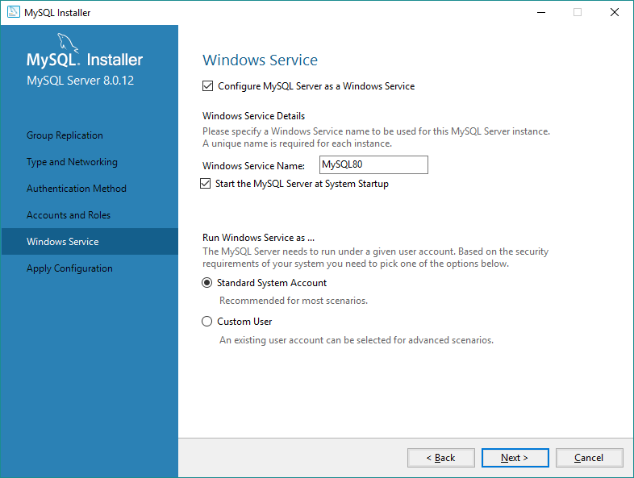Para finalizar a configuração do MySQL, o instalador nos mostra um resumo do que será feito. Só precisamos clicar em Executeong>.
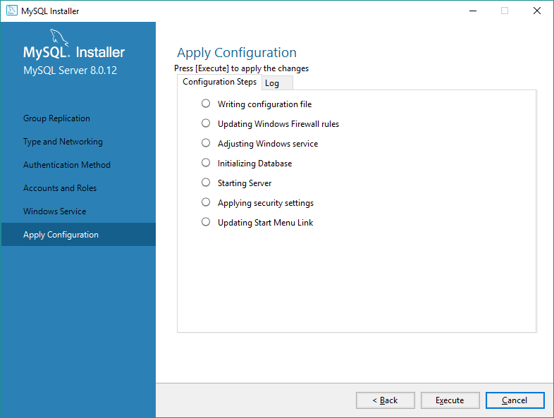Após o processo de configuração terminar, basta clicar em Finishong>.
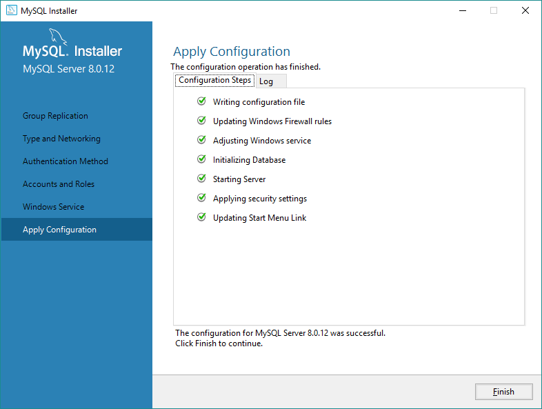Por fim, você poderá copiar o log da instalação para a memória do seu computador e/ou iniciar algumas ferramentas de utilização do MySQL como o MySQL Workbenchong> MysQL Shell/strong>.
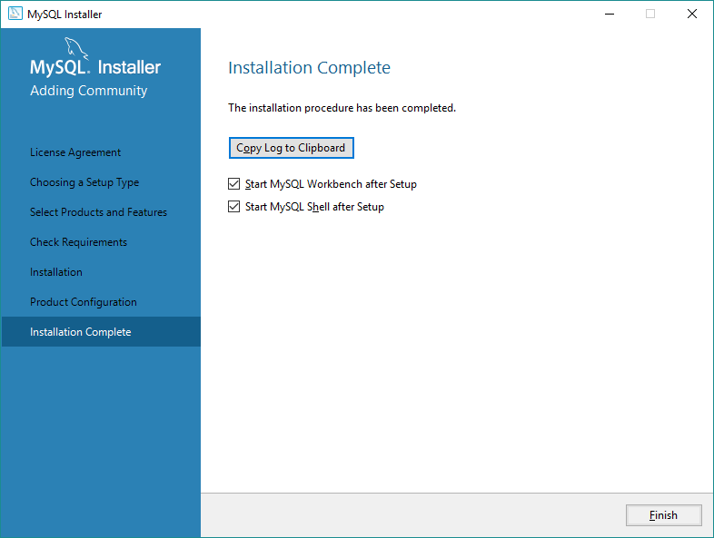Pronto! Tudo certo pra você começar a usar o MySQL no seu computador.